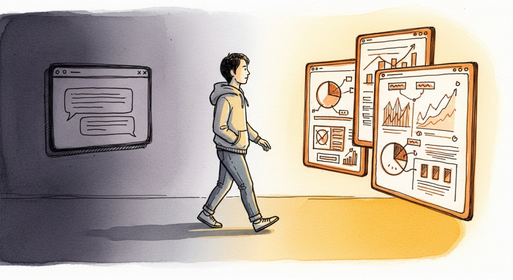
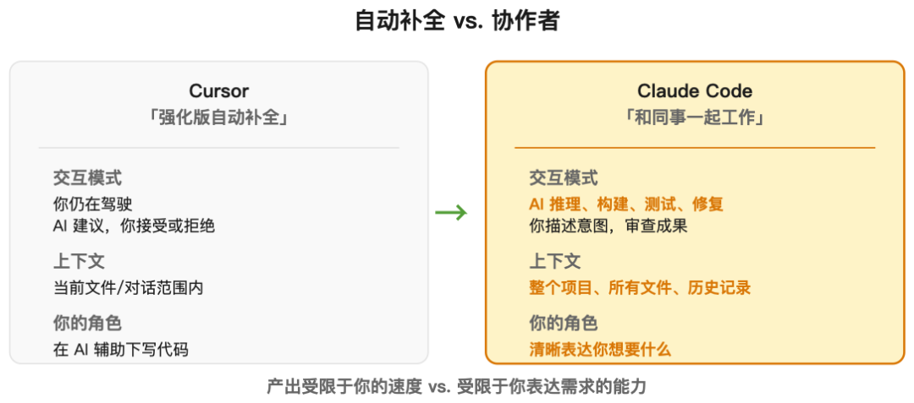
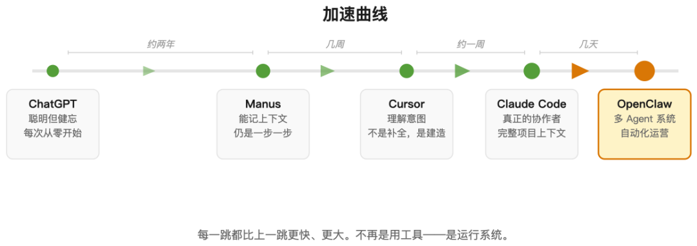
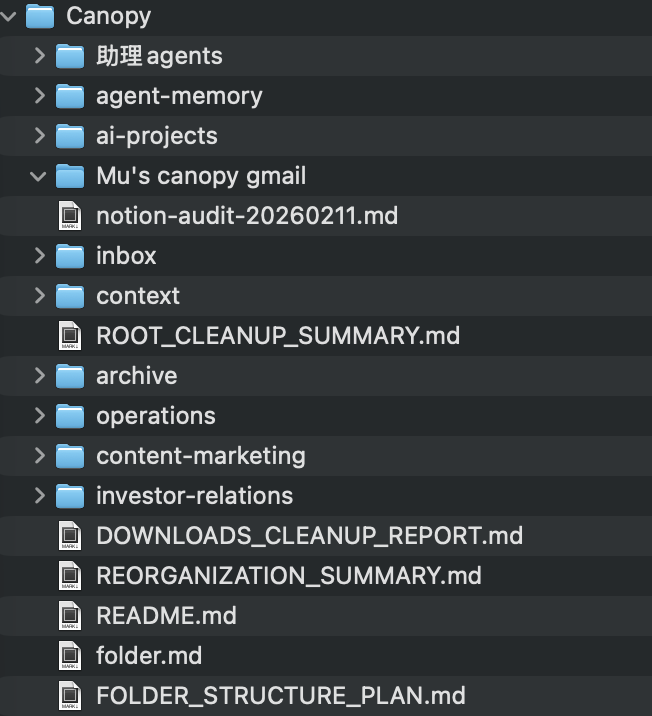
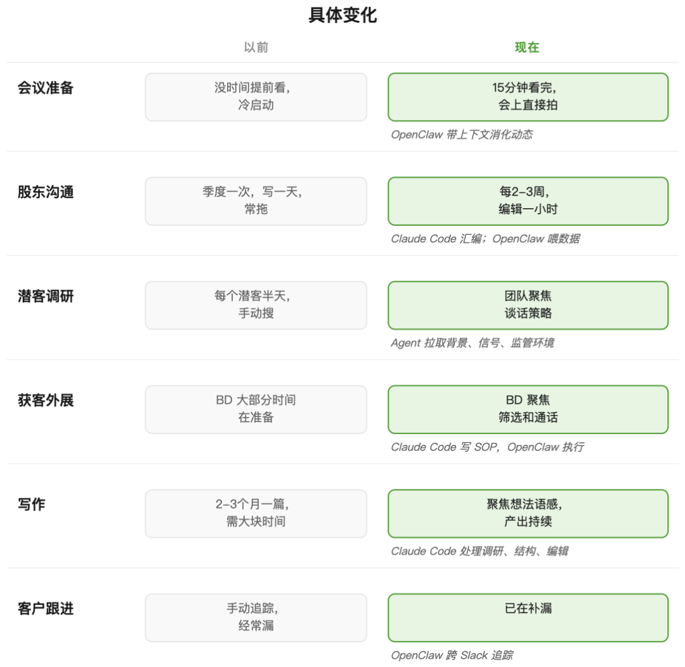
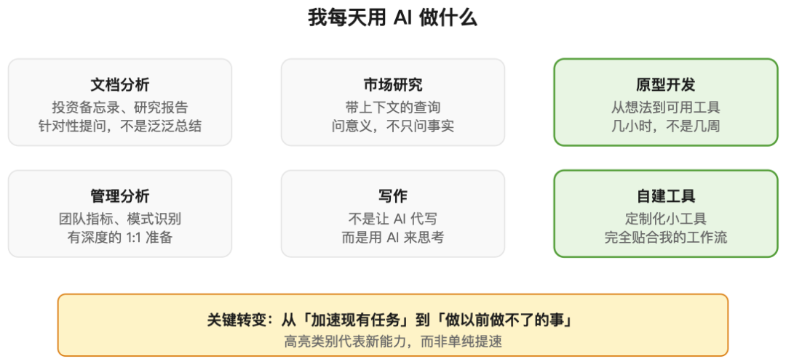
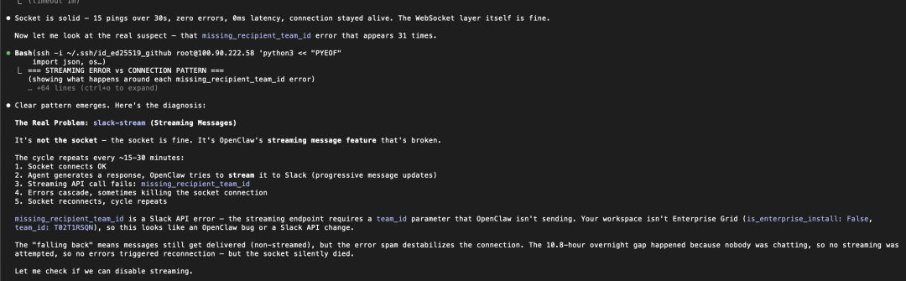

从"和 AI 聊天"到"让 AI 干活"，中间隔着的不是窗户纸，是一道正在加宽的鸿沟

凌晨两点，我盯着屏幕上四个并行运行的Agent窗口。
一个在处理客户资料，一个在修代码，一个在抓 Slack 里的未读消息，还有一个卡在了某个 API 的限制上，等我拍板。我不是在"使用"AI，我是在管理AI——像凌晨两点还在车间里巡检的工头。
两个月前，我以为自己对 AI 的使用已经到头了。
GPT-3.5 出来我就开始用，两年了，每天用——起草备忘录、压力测试战略、写代码原型。作为一个写过代码、做过产品经理的 CEO，我觉得自己算是圈内人了。
但 CTO 一直安利我试试 Cursor 和 Claude Code CLI。我一开始是抗拒的——IDE 是程序员的地盘，我坐进去干嘛？但好奇心战胜了惯性。试了之后才发现：过去两年，我只是在跟 AI 聊天，而现在，我才刚开始跟 AI 共事。
这两者之间，隔着的不是一层窗户纸，是一道正在加宽的鸿沟。
而我现在就在鸿沟的另一边，带着黑眼圈，跟你汇报战况。
一、我以为的天花板，其实是画地为牢
说实话，我不是那种对技术一窍不通的 CEO。我写 Python，调过 API，追踪大模型论文。我一天跟 AI 聊十几次，从写备忘录到压力测试战略，自我感觉良好。
这种舒适感，就是陷阱。
我那时做的所有事，都是"开标签页-提问-得到答案-关掉标签页"。下次重来。我用 AI 的方式，跟大多数高管没什么两样：把它当成一个聪明点的语音助手，聊完就散，从不共事。
我也试过 Manus 那种打包好的 Agent 产品。它能记住上下文，能跨会话追踪任务，做 PPT 确实好用。但交互模式依然是：我下指令，它执行，一步一步来。
我知道有 GitHub Copilot 这种编程工具，但我是个 CEO，不是工程师。虽然我会写点代码，但打开 IDE 总让我感觉像职业生涯倒退。我潜意识里给工具分了类：这是给程序员用的，那是给管理者用的。
这道天花板是我自己搭的。 我定义了"像我这样的人"该用什么工具，却没发现工具已经进化到不在乎你是什么职位了。
二、墙倒下的感觉
CTO 推荐我试 Cursor。一个 IDE，程序员的工具。我几年没正经写代码了，但好奇心作祟，我试了。
Cursor 不在乎你的头衔。你用大白话描述想要什么，它建造，而不只是自动补全。对于一个长期只能提需求、不能动手做的人来说，那种感觉就像一堵墙突然塌了——我第一次能直接触摸到"实现"这一层。
然后他让我试 Claude Code。这一次，我才真正意识到差距在哪。

Cursor 是聪明的副驾驶，你还是得握着方向盘，一行一行开。Claude Code 是个同事。你描述目标，它推理问题，问你 clarifying questions，写代码，测试，修 bug。它脑子里装着整个项目——哪些文件存在、怎么连接、昨天做了什么。
我的角色从"写"变成了"审"。瓶颈从我的技术能力，彻底转移到了另外两个东西：我能不能把需求说清，以及我能不能判断回来的是不是对。
这时候我才恍然大悟——这两个能力，恰恰是 CEO 的核心技能。我一直告诉自己编程工具不适合我，却不知道工具早就搬到了我擅长的地方。
然后我又发现了 OpenClaw，一个开源多 Agent 框架。这一次，整个游戏规则都变了。
Manus → Cursor → Claude Code → OpenClaw。整个过程三四周，加速度曲线：每一跳都比上一跳更快、更深。到最后，我不再是"用一个 AI 工具"，我是在运行一个系统。

三、鸿沟的另一边长什么样
现在我的两层架构：
OpenClaw 是永动层。 它跑在云端，盯着公司 Slack，处理企业运营的节奏：消化团队更新、执行外联工作流、追踪客户请求、在截止日期前踢屁股。它把散落在人、工具和频道里的碎片，以前没人有空连接的拼图，抓到一起。
Claude Code 是深度层。 当我需要硬啃一件事——写这篇文章、设计新工作流、修 OpenClaw 本身——我就坐在 Claude Code 里。OpenClaw 是工厂车间，Claude Code 是工作台。

为 agent 重构的本地文件夹 + markdown 项目说明文件
这种分层很重要，因为不同 AI 工具有 真正不同的长处——不同的模型、不同的记忆、不同的自主性。决定哪个 Agent 干哪件事，本身就是一门新手艺，我还在学。
但关键不是具体工具。关键是我从"问 AI 问题"跨越到了"运行 AI 系统"——这差别不是量变，是质变。
四、具体发生了什么变化
直接上对比：


时间节省是真的——以前一两周的活，现在一小时。但速度不是重点。
作为 CEO，永远有做不完的事。很多任务卡在尴尬的中层：值得做，但又不值得专门招个人。于是它们就被落下了——股东更新一拖再拖，客户调研流于表面，跟进不了了之。
AI 不只是让现有工作变快。它让那些正在从指缝漏掉的工作，真的被完成了。
跨越鸿沟还带来一个意外的副作用：我对 AI 本身的焦虑消失了。我现在在出租车上用语音跟 AI 聊天，过马路时冒出的想法，坐下时已经变成方案。我每天都在前线动手——切换基础模型（Claude、Gemini、通义千问、Kimi）、搭 RAG 管道、折腾 Agent 记忆系统。不是读论文，是用。
这对高端行业，比如家办从业者意味着什么？
你们管理的不是代码，是跨代际的财富、复杂的家族关系、监管敏感的数据。你们对"自动化"的谨慎是对的——一个错误的指令可能影响几代人的资产安排，一个数据泄露可能毁掉家族声誉。
但谨慎不等于回避。
家办的核心工作，本质上也是"收集碎片信息 → 整合理解 → 做出判断 → 执行 → 验证"。从跨托管行的持仓汇总，到 PE 基金的现金流预测，到家族成员的报告定制——这些工作里，有多少是重复的数据整理，有多少才是真正的决策？
AI 不会替你做资产配置的决定，但它可以让你在开会前 15 分钟拿到完整的跨行持仓视图。AI 不会替你判断哪个基金经理值得信任，但它可以帮你把尽调材料里的关键条款和风险点标出来。
关键是分清边界：什么是可以自动化的信息处理，什么是必须人来做的判断。
一旦这个飞轮启动，鸿沟两边的人，差距会拉大得飞快。
五、没人告诉你的部分
上面是美好版本。下面是剩下的。
搭建系统本身就是份工作。
表格里的任务确实花的时间少了，但搭建和维护这个系统本身，是一份新的、持续的工作。我用任务时间换了基建时间——对我来说，净收益显然是正的。但我有动机、有技术背景、有能烧的时间。对大多数人，这不成立。
世界不是为 Agent 设计的。验证码、短信验证、登录超时、PDF、老旧的 Excel、按人类速度设计的 API 限流——每次 Agent 撞到这些墙，都是你去找 workaround。（这种摩擦也是巨大的机会——包括对我们这样的公司。壁垒就是商业模式。）
而且自建 Agent 不是产品，是乐高。记忆、报告、任务编排、权限、监控、错误处理、工具集成——每一块都需要决策，很多需要技术判断。它永远完不成，因为底层模型、API、工具每几周就变。
哪怕 Claude Code 能听懂大白话，你依然需要在它们推理跑偏时引导和覆盖。
举个例子。我最近在 OpenClaw 里设计一个三层记忆系统：实时记忆、日度记忆、周度记忆。 听起来很清晰对吧？我让 Claude Code 读了一堆论文，设计架构。它输出了一份看起来很完整的方案。我松了一口气，以为这事结了。
跑不动。
让另一个 Claude 实例再看一遍，发现架构有问题。修。又崩。开了 Codex，再看一遍，又发现新的边界情况没处理。再修。就这样来来回回，四五天都是这个循环：修了崩，崩了修，好像永远在原地打转。
中间 OpenClaw 还发布了新版本，直接覆盖了我改了一半的代码。重来。
最荒谬的是，Claude 和 Codex 有时候写代码会出 typo——不是逻辑错误，就是单纯的拼写错误。这种低级错误让调试时间翻倍，因为你一开始总以为是架构问题，找了半天才发现是变量名少打了一个字母。
最后我不得不让 Agent 把关键代码片段提取出来，我一行一行人工 review。 这跟我当初用 AI 是为了"省时间"的初衷，差了十万八千里。
现在这套记忆系统大概 80-90% 的时候能工作。实时记忆偶尔还会报错，但好在 Agent 已经记下了之前修过的地方，查的时候有迹可循。我的 Agents 现在是不是还有小错误？有。但我比较有信心它们已经能稳定记住实时、日度和周度记忆了——finger cross。
工具从未如此好用，但用好它们所需的判断力，从未如此稀缺。

展示实际工作界面，让读者看到"working with AI"长什么样
然后是对你的影响。
大概有两周，我真的快窒息了。Agent 不停地要权限、要决策、产出速度快过我 review 的速度。我每晚工作到凌晨两三点——不是因为必须，而是因为停不下来。
我开始叫它"人脑带宽不足"：系统的瓶颈不再是机器，是你。
而且它会上瘾。研究者发现，AI 响应的不确定性会触发类似老虎机的多巴胺机制——可变奖励让你不停想要下一次。本月哈佛商业评论的研究证实了："AI 工具没有减少工作——它们持续强化了工作。"
《黑客帝国》里有个场景，Neo 醒来发现他一直插在某个系统里，产出他以为是自己生活的东西。这个类比不完全精确，但那种不适感，熟悉得令人不安。
我的咨询师说得更直白："你告诉我 AI 是为了解放时间，为什么你比之前更焦虑了？"
我怀疑这是 AI 浪潮的终极问题之一——不是技术管不管用，而是对它用得最好的人，会发生什么。这比我的个人经历更大。我还在摸索怎么在里面生活。如果你走这条路，你也得摸索。
六、如果你现在才开始
如果你隐约觉得 AI 应该能给你更多，你是对的。我之前没意识到的是，AI 一直在从它那侧缩短距离——工具变得太好、太快，你可能离质变只差一步却不知道。
挑一件你真正在乎的任务。给 AI 真实的上下文。让信任从那里建立。
怀疑不会消失——它只是改变形状——学习税持续被征收。但回报是真的。
"用 AI 聊天"和"让 AI 干活"之间的那条线，正在加宽。 正如 Angelo Robles——服务过上百个亿万富翁家族的人——所说："以前需要二十个员工的活，现在需要一两个会用 AI 的人。"
我两个月前跨过来的。过程混乱、筋疲力尽、远未结束——我差点把自己烧光。我不是在山顶写这些，我是在半山腰，喘着气。
但我不会回去。
接下来几篇，我会深入——AI Agent 的硬数据、我的团队怎么日常用这些工具、以及我们怎么重新思考 Canopy 在 AI 和财富管理交叉点的产品。
但如果只能带走一件事：那条线是可以跨过去的。从一个任务开始。(PS: 我建了一个小群，聊 AI Agent 实操和 OpenClaw 怎么调，感兴趣的朋友可以私信我。）
陈沐（Mu Chen），Canopy CEO，清华五道口金融学院客座讲师。Canopy 服务全球 60+ 家族办公室与超高净值客户，跟踪超过 900 亿美元资产。他在小宇宙播客「不止金钱」、微信公众号「沐的沙盒」和英文 newsletter Amongst Families 记录 AI 与财富管理的一线实践。
参考来源： - M. Karen Shen & Dongwook Yoon, "The Dark Addiction Patterns of Current AI Chatbot Interfaces", CHI 2025 - Aruna Ranganathan & Xingqi Maggie Ye, "AI Doesn't Reduce Work — It Intensifies It", Harvard Business Review, February 2026 - Angelo Robles, Family Office Association